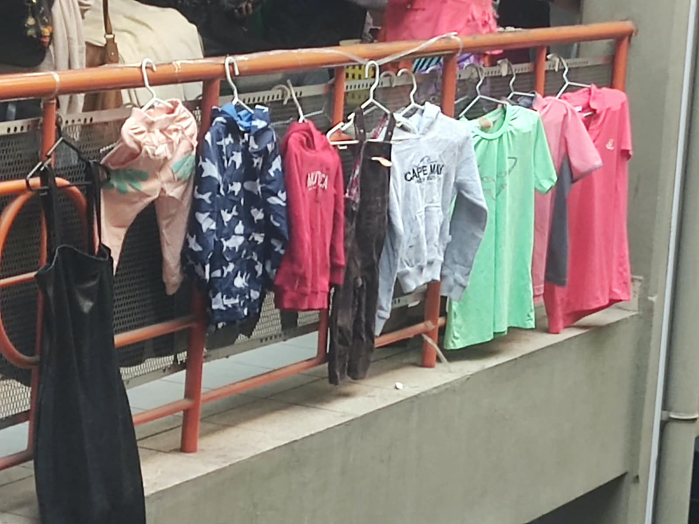
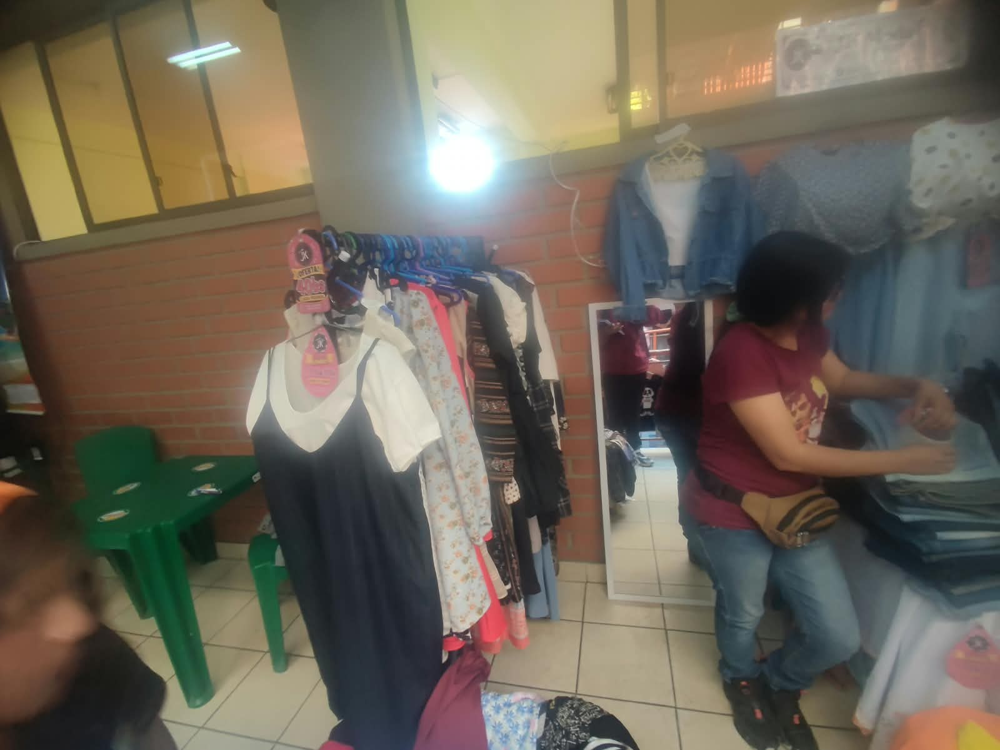
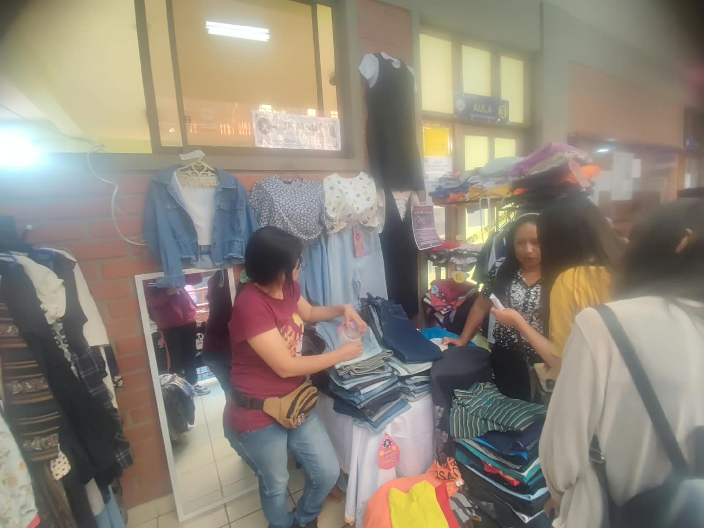

Descripción del Negocio
Estilo Único es una boutique de moda que ofrece prendas de vestir, accesorios y calzado con un enfoque en la calidad, el diseño exclusivo y las últimas tendencias. Nos dirigimos a clientes que buscan expresar su individualidad a través de la moda, ofreciendo una experiencia de compra personalizada y un ambiente acogedor.



Requisitos para Emprender en Moda
- Capital Inicial: Dependiendo del modelo de negocio (tienda física, online, dropshipping), puede variar significativamente. Se recomienda un mínimo de 5.000€ - 15.000€ para un stock inicial y gastos de operación.
- Conocimiento del Mercado: Entender las tendencias actuales, nichos de mercado y público objetivo.
- Proveedores Confiables: Establecer relaciones con fabricantes o distribuidores de calidad.
- Plataforma de Venta: Definir si será tienda física, e-commerce o ambas.
- Marketing y Branding: Crear una identidad de marca sólida y estrategias de promoción.
- Aspectos Legales: Registro de empresa, licencias y permisos necesarios.
¿Con Cuánto se Empieza?
El capital inicial puede variar enormemente. Para una tienda online sin stock propio (dropshipping), podría ser tan bajo como 500€ - 1.000€ (para web, marketing). Para una tienda física con stock propio, se necesitarían al menos 10.000€ - 30.000€, cubriendo alquiler, decoración, stock inicial, licencias y marketing.
Plan Económico Básico
Costos Iniciales Estimados:
- Alquiler y Acondicionamiento del Local: Variable (si aplica).
- Stock Inicial de Productos: 30% - 50% del capital total.
- Diseño Web / Tienda Online: 500€ - 2.000€.
- Marketing y Publicidad Inicial: 500€ - 2.000€.
- Gastos Legales y Administrativos: 200€ - 500€.
- Inventario y Equipamiento: (Perchas, maniquíes, TPV, etc.) 500€ - 1.500€.
Costos Operativos Mensuales Estimados:
- Alquiler y Servicios: Variable.
- Reposición de Stock: Dependerá de las ventas.
- Salarios: (Si aplica).
- Marketing Continuo: 200€ - 1.000€.
- Gastos de Envío y Logística: Variable.
Proyecciones de Ingresos:
Se basarán en el volumen de ventas esperado, el margen de beneficio por producto y la estrategia de precios. Es crucial realizar un análisis de punto de equilibrio.
Diseño del Local/Negocio
Concepto: Minimalista, moderno y chic. Colores neutros (blanco, gris, beige) con toques de color en accesorios o iluminación. Espacios amplios y despejados para facilitar la circulación y destacar las prendas.
Distribución:
- Zona de Exposición: Percheros organizados por tipo de prenda o colección, estanterías para accesorios, maniquíes estratégicamente ubicados.
- Probadores: Amplios, bien iluminados, con espejos de cuerpo entero y asientos cómodos. Música ambiental agradable.
- Mostrador de Caja: Minimalista, con espacio para exhibir pequeños accesorios y un sistema TPV moderno.
- Zona de Descanso/Espera: Un pequeño rincón con asientos cómodos si el espacio lo permite.
Iluminación: Fundamental. Luz cálida y general, con focos dirigidos a las prendas para resaltarlas. Buena iluminación en probadores y espejos.
Decoración: Elementos decorativos sutiles pero elegantes (plantas, arte moderno, espejos). Uso de materiales de calidad (madera, metal).